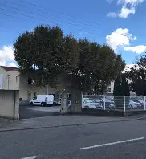
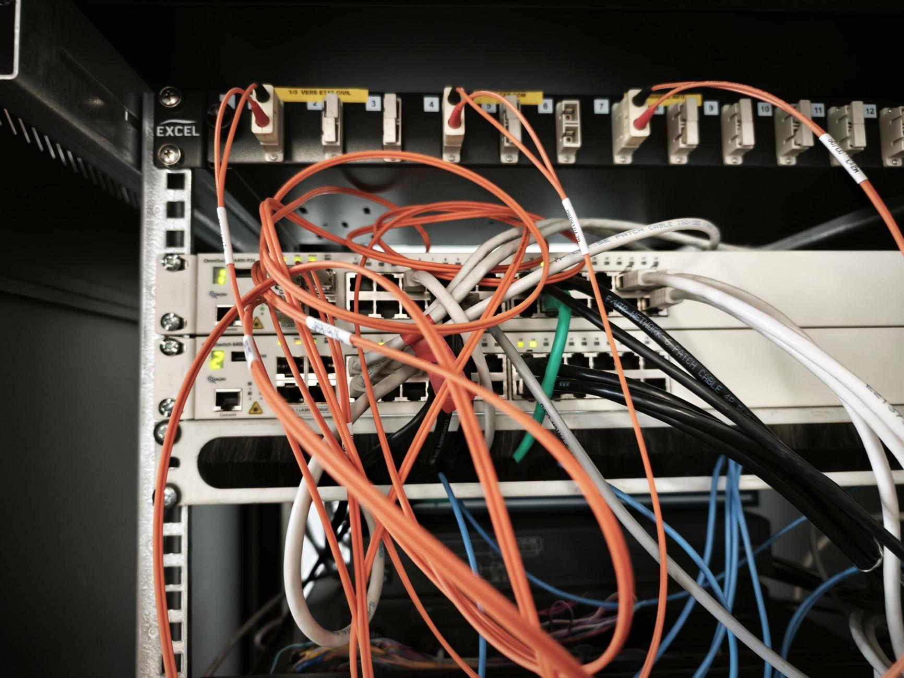
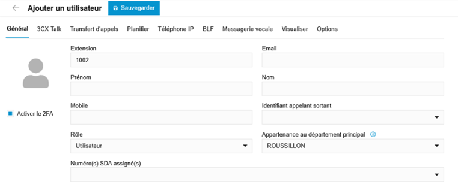
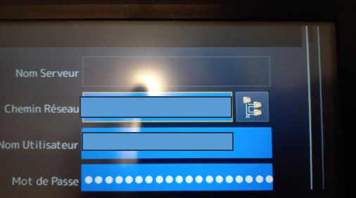

Locaux des Services TechniquesLa Mairie de Roussillon (Isère)
Commune d'environ 8 500 habitants dirigée par le maire Robert Duranton (réélu en 2026) et 8 adjoints, la mairie gère de nombreux services publics (État civil, urbanisme/PLU, écoles, CCAS, police municipale) répartis sur 10 sites communaux.
J'ai intégré la cellule informatique et téléphonie au sein du Service Technique (15 à 20 agents), responsable de la maintenance du parc matériel et du réseau reliant l'ensemble des bâtiments via trois cœurs de réseau en fibre optique.
Inventaire complet des switchs et brassage de la ville
Contexte : Dans le cadre de la Phase 1 du renouvellement de l'infrastructure (remplacement d'une dizaine de switchs Alcatel vieillissants de plus de 10 ans, vulnérables et hors garantie, pour déployer de futurs VLAN par service), j'ai cartographié l'intégralité du parc (13 switchs et 6 box Internet).
- Méthodologie & terrain : Travail en binôme sur les créneaux 12h–13h pour ne pas gêner les agents. Tests de continuité au câble Ethernet et communication en direct via 3CX pour tracer la chaîne complète : Appareil → Prise murale → Port baie → Port switch.
- Documentation & Projet : Saisie au propre sur Excel, accès aux zones complexes (combles de la Maison du Patrimoine), participation à un audit sur site avec un ingénieur Orange et contribution au Cahier des Clauses Techniques Particulières (CCTP) du marché public.

Cœurs de réseau fibre (Alcatel OmniSwitch)Résolution d'une panne générale (Conflit DHCP)
Dès la première semaine, une panne générale a paralysé l'accès réseau de la mairie suite à la réinitialisation accidentelle d'une box à la Police Municipale (remise en service du serveur DHCP par défaut sur le port WAN).
- Diagnostic : Analyse des adresses IP des postes affectés et isolation progressive des box par bâtiment.
- Remédiation : Passage de mon poste en routage statique pour accéder à la box, attribution d'une IP fixe, désactivation du DHCP et sécurisation du Wi-Fi avec un SSID masqué.
- Suivi : Attribution d'une IP fixe sur le poste d'une adjointe suite aux perturbations de bail DHCP.
Administration et déploiement sous 3CX
Intervention sur l'architecture de téléphonie IP de la collectivité hébergée sur le serveur 3CX de la communauté de communes à Saint-Maurice-l'Exil.
- Postes de secours : Configuration de 3 téléphones IP (attribution des numéros d'extension, adresses MAC, lien de provisioning et résolution d'un blocage lié aux certificats de confiance).
- Routage d'appels : Paramétrage des renvois d'appels et de l'identifiant sortant pour le service des Ressources Humaines.

Paramétrage d'une extension sur 3CXAssistance technique, déploiement et gestion matérielle
Au quotidien, j'ai assuré le support de proximité auprès des agents municipaux, des élus et des écoles sur l'ensemble des sites :
- Maintenance matérielle & OS : Ajout de barrettes de RAM (4 Go) sur des postes lents, migration de postes Windows 10 vers Windows 11 via Rufus avec sauvegarde préalable, et gestion d'une surchauffe PC au CCAS.
- Imprimantes & Logiciels : Installation réseau par IP fixe, configuration du scan vers dossier partagé (SMB), résolution de conflits d'antivirus, recherche d'identifiants dans Active Directory, et diagnostic applicatif (logiciel Millésime au CCAS).
- Projets & Logistique : Analyse comparative de 3 offres logicielles pour la restauration scolaire, préparation audiovisuelle des salles de spectacle (Sémaphore, Espace) et achats/bons de commande matériel.

Configuration d'un chemin de scan réseauBilan personnel et compétences développées
Ce stage m'a permis de consolider mes acquis de première année de BTS SIO en conditions réelles et d'acquérir une véritable méthodologie de diagnostic (poser les bonnes questions aux utilisateurs, isoler la source d'une panne réseau ou logicielle). J'ai également gagné en autonomie, en organisation et en gestion des priorités.
Sur le plan humain, cette immersion au sein du service technique m'a appris à m'adapter à différents profils de collègues. Bien que très formatrice, cette expérience m'a permis de prendre du recul sur mon projet professionnel et de constater que je ne souhaite pas m'orienter vers ce type de poste de support de proximité sur le long terme.